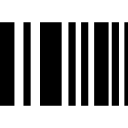

Please switch to a screen
wider than 300px to
enjoy a top-notch experience while
browsing this site ;)
[001] sun rise/set/riset

While the sun rises in one place, it sets in another — a visual echo of simultaneity. This piece invites the viewer to let go of self-centered narratives and recognize the shared rhythms of distant lives. Through subtle shifts in warm tones — between amber, ochre, and gold — it suggests a quiet call for empathy in a world increasingly defined by extreme polarization.
A subtle protest against the culture of the scroll. Just as the song Video Killed the Radio Star proclaimed the death of one medium at the hands of another in the 80s, this piece reflects a new eclipse: social media has now killed the video, or in other words said, long-form formats, and with them, our collective capacity for sustained attention.
Evoking the classic DVD idle screen once familiar in living rooms everywhere. The motion, gentle and repetitive, is melancholic — a meditation on the simplicity we’ve lost and a call for patience, pause and depth.
[002] t1kTØk killed the TV star
tv
[003] impaKt
Play with the mouse putting it in and out the ball.
This piece is a playful yet poignant reminder: nothing remains the same once contact is made. With every interaction, the “bicho” — a restless, shifting form — responds. It darts to new coordinates, changes its shape, transforms its color, and what seems like chaos is, in fact, consequence.
Each movement echoes a fundamental truth: we leave traces. On others, on spaces, on moments.
The animation becomes a metaphor for the subtle, often invisible impact of presence, nothing — and no one — stays quite the same after being seen, felt, or acknowledged.
Please switch to a screen
wider than 300px, to
enjoy a top-notch experience while
browsing this site ;)